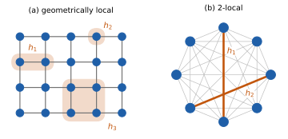
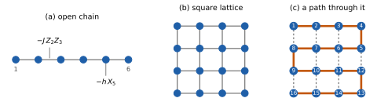
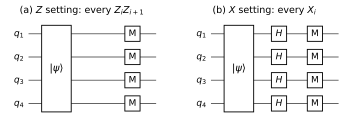
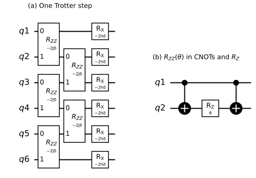
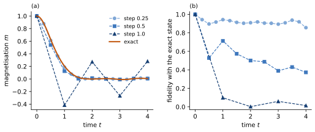
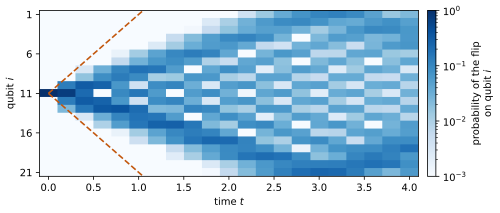
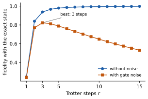

3 Measuring and simulating Hamiltonians
\[ \newcommand{\ket}[1]{\left|#1\right\rangle} \newcommand{\bra}[1]{\left\langle#1\right|} \newcommand{\gate}[1]{\mathrm{#1}} \newcommand{\Tr}{\mathrm{Tr}} \]
In the first two chapters, we estimated the expectation values of single Pauli strings on noisy devices. In this chapter, we turn to the observables and the dynamics of physical systems. Both are described by a Hamiltonian, the matrix of the energy of a system, which on a quantum computer becomes a sum of many Pauli strings. These sums stay manageable because physical Hamiltonians are local: each term acts on a few nearby qubits.
By the end of the chapter, you should be able to write a Hamiltonian as a sum of Pauli strings; estimate its energy with a given number of shots and few measurement settings; build circuits for time evolution from native gates and count their cost; and weigh the error of such a circuit against the noise of its gates.
3.1 Energy and time evolution
The Hamiltonian \(H\) of a system is the observable representing its energy. On \(n\) qubits, it is a Hermitian \(2^n\times 2^n\) matrix. The eigenvalues \(E_k\) of \(H\) are the possible outcomes that a measurement of the energy can give, and its eigenvectors \(\ket{E_k}\) are the states with a definite energy. Together, they solve the time-independent Schrödinger equation \[ H\ket{E_k} = E_k\ket{E_k} . \] The lowest eigenvalue is the ground-state energy, and its eigenvector the ground state. They matter because a system that is cold enough settles in its ground state (or very close to it). The ground state of a Hamiltonian modeling a material determines how that material behaves at low temperature, for example whether it is magnetic, or whether it is superconducting. Differences between energies decide much of chemistry: whether a molecule is stable, how much energy a chemical reaction needs, which frequency of light a molecule absorbs (and hence its color). Finding ground states is the subject of the next chapter.
The Hamiltonian also decides how a state changes in time, through the time-dependent Schrödinger equation and its solution, \[ i\,\frac{d}{dt}\ket{\psi(t)} = H\ket{\psi(t)}, \qquad \ket{\psi(t)} = e^{-iHt}\ket{\psi(0)} . \tag{3.1}\] We use units in which the reduced Planck constant \(\hbar\) is 1: energies and frequencies are measured in the same unit, and times are measured in units of one over energy.1 Since \(H\) is Hermitian, \(e^{-iHt}\) is unitary. In the eigenbasis of \(H\), \(e^{-iHt} = \sum_k e^{-iE_kt}\ket{E_k}\bra{E_k}\): each eigenstate only picks up a phase, at a rate set by its energy, and a superposition changes because these phases turn at different rates.
For a single qubit with \(H = -\frac{\omega}{2}Z\), for example, the relative phase of \(\ket{0}\) and \(\ket{1}\) turns at the angular frequency \(\omega = E_1 - E_0 = 2\pi f_{01}\), where \(f_{01}\) is the qubit frequency of Section 1.2.2. As long as the frequency \(f_{01}\) is known, this rotation about the \(Z\) axis can be compensated using virtual \(Z\) rotations (Section 1.3.5).
3.2 Local Hamiltonians
A Hamiltonian on \(n\) qubits is a Hermitian \(2^n\times 2^n\) matrix, described by \(4^n\) real numbers. On 50 qubits, that is far too many to write down or store in memory. In practice, physics spares us this cost through locality. Interactions in physical systems involve only a few sub-systems (e.g. particles) at a time, often only neighbouring ones, so the Hamiltonian is a sum \[ H = \sum_{i=1}^{M} h_i \tag{3.2}\] of terms \(h_i\) that each act on a few qubits, and as the identity on all others, with a number of terms \(M\) that grows polynomially in \(n\) rather than as \(4^n\). Figure 3.1 shows the two common forms of locality.
Definition 3.1 (\(k\)-local Hamiltonian) A Hamiltonian \(H = \sum_i h_i\) on \(n\) qubits is \(k\)-local if each term \(h_i\) acts on at most \(k\) qubits, with \(k\) fixed as \(n\) grows.
Definition 3.2 (Geometrically local Hamiltonian) Place the \(n\) qubits on the sites of a chain or a lattice. A Hamiltonian \(H = \sum_i h_i\) is geometrically local if each term \(h_i\) acts only on qubits within a fixed distance of each other, with the distance fixed as \(n\) grows.

In the models of this chapter, the terms act on single qubits or on pairs of neighbours. Every qubit then appears in only a few terms, and the number of terms is proportional to \(n\). A geometrically local Hamiltonian is also \(k\)-local, but not the other way round: a Hamiltonian with a \(ZZ\) term on every pair of qubits is 2-local, but it has \(n(n-1)/2\) terms, and no arrangement of the qubits on a lattice makes it geometrically local. Several results below, such as the growth of the Trotter error and the light cones (which we discuss in Section 3.6), rely on this stronger property.
3.2.1 Pauli decomposition
To measure a Hamiltonian, or to build a circuit from it, we write it as a sum of Pauli strings. We write \(\mathcal{P}_n = \{I, X, Y, Z\}^{\otimes n}\) for the set of the \(4^n\) Pauli strings on \(n\) qubits (Definition 1.1). They are orthogonal, \(\Tr[PQ] = 2^n\) if \(P = Q\) and \(0\) otherwise, and they form a basis of all \(2^n\times 2^n\) matrices (Section 2.1.1). Every Hamiltonian can therefore be written as \[ H = \sum_{P\in\mathcal{P}_n} c_P\, P, \qquad c_P = \frac{\Tr[PH]}{2^n} , \tag{3.3}\] with real coefficients, since \(c_P^* = \Tr[(PH)^\dagger]/2^n = \Tr[HP]/2^n = c_P\).
In general, all \(4^n\) coefficients can be nonzero. For a \(k\)-local Hamiltonian, most of them vanish: each term \(h_i\) acts as \(I\) outside its qubits, so its Pauli strings do too, and all strings have weight at most \(k\). Counting the strings of weight \(w \le k\) (choose \(w\) qubits, and \(X\), \(Y\) or \(Z\) on each) shows that a \(k\)-local Hamiltonian is a sum of at most \(\sum_{w\le k}\binom{n}{w}3^w\) Pauli strings, which grows at most like \(n^k\).
3.3 Spin models
Which local Hamiltonians do we study on a quantum computer? The simplest are spin models. Many particles, such as electrons, carry a spin, which makes each of them a tiny magnet. The spin of an electron is a spin-1/2: measured along any axis, it gives one of two values, up or down: it is a qubit. The Pauli matrices \(X\), \(Y\) and \(Z\) represent its components along the three axes (up to a factor \(\hbar/2\), which is \(1/2\) in our units). In a magnetic material, the spins of neighbouring atoms interact. A spin model describes this with one qubit on each site of a chain or lattice (for spin-1/2; larger spins have more levels), and terms that couple neighbouring qubits. Spin models are standard test problems for quantum computers: each spin is one qubit, all terms are local, and yet many of their properties, in particular their dynamics, are hard to compute classically on large lattices. The Hamiltonians of molecules can be written as sums of Pauli strings too, after an encoding of the electrons into qubits, but with many more terms; we stay with spin models.
Definition 3.3 (Transverse-field Ising model) The transverse-field Ising model (TFIM) on a chain or lattice of \(n\) qubits is \[ H = -J\sum_{\langle i,j\rangle} Z_iZ_j \;-\; h\sum_{i=1}^{n} X_i , \] where \(Z_i\) is \(Z\) on qubit \(i\) and the identity on the others, the first sum runs over the bonds \(\langle i,j\rangle\), the pairs of neighbouring qubits, and \(J, h > 0\) are energies. On an open chain, the bonds are the pairs \((i, i+1)\) for \(i = 1, \dots, n-1\).
Each term favours something different. A bond term \(-JZ_iZ_j\) has the energy \(-J\) when the two qubits agree, in \(\ket{00}\) or \(\ket{11}\), and \(+J\) when they differ: it favours neighbours that are aligned along \(z\). A field term \(-hX_i\) has its lowest energy in \(\ket{+}\): it favours each qubit pointing along \(x\), transverse to \(z\). No state minimises both kinds of terms at once, since \(Z\) and \(X\) do not commute. For \(h = 0\), the ground states are \(\ket{0\cdots 0}\) and \(\ket{1\cdots 1}\), and for \(J = 0\), it is \(\ket{+\cdots +}\). In between, the ground state is entangled, and on a long chain its character changes abruptly at \(h = J\), a quantum phase transition. Exercise 3.2 works out the smallest case.
On a chain of \(n\) qubits, the TFIM is a sum of \(2n-1\) Pauli strings: \(n-1\) bonds and \(n\) fields. On an \(L\times L\) square lattice (Figure 3.2), it has \(2L(L-1)\) bonds and \(L^2\) fields: 280 terms for \(L = 10\), against up to \(4^{100}\) for a general Hamiltonian on 100 qubits.

The second model of this chapter describes the magnetism of many materials.
Definition 3.4 (Heisenberg model) The Heisenberg model on a chain or lattice of \(n\) qubits is \[ H = J\sum_{\langle i,j\rangle}\big(X_iX_j + Y_iY_j + Z_iZ_j\big) , \tag{3.4}\] with the bonds \(\langle i,j\rangle\) of Definition 3.3 and a coupling energy \(J\).
Each bond treats the three axes alike, so its energy depends only on how the two spins are oriented relative to each other. In the rest of the chapter, the TFIM is the running example, and the Heisenberg model appears where it makes a point more clearly.
One property of the Heisenberg model is used for the light cones of Section 3.6. A bond term equals \(J(2\,\gate{SWAP} - I)\) (Exercise 3.1), so it can move a 1 from one qubit to its neighbour, but never create or remove one. The number of qubits in \(\ket{1}\), which we call the number of flipped qubits, therefore never changes during the evolution: it is a conserved quantity of the model. In particular, \(\ket{0\cdots 0}\) is an eigenstate.
Exercise 3.1 (Pauli decompositions)
Write \(M = \begin{pmatrix} 0 & 1-i \\ 1+i & 2 \end{pmatrix}\) as a sum of Pauli matrices.
Write the SWAP gate as a sum of two-qubit Pauli strings, and conclude that \(X\otimes X + Y\otimes Y + Z\otimes Z = 2\,\gate{SWAP} - I\). Which eigenvalues does a bond term of the Heisenberg model have, and for which states?
Hint
Use Equation 3.3, and compute each trace as a sum over the basis states \(\ket{ab}\).
Show that \(e^{-i\theta\,\gate{SWAP}} = \cos\theta\, I - i\sin\theta\,\gate{SWAP}\). What does this gate do to \(\ket{10}\)?
Hint
Check which property of \(P\) the derivation of Equation 1.1 used.
Exercise 3.2 (The TFIM on two qubits) The TFIM on two qubits is \(H = -JZ_1Z_2 - h(X_1 + X_2)\).
Write \(H\) as a \(4\times 4\) matrix in the basis \(\ket{00}, \ket{01}, \ket{10}, \ket{11}\).
Show that \(H\) maps the states \(\ket{00}+\ket{11}\) and \(\ket{01}+\ket{10}\) into combinations of each other, and the states \(\ket{00}-\ket{11}\) and \(\ket{01}-\ket{10}\) to multiples of themselves. Find the four eigenvalues, and show that the ground-state energy is \(-\sqrt{J^2 + 4h^2}\).
What are the ground states for \(h = 0\) and for \(J = 0\)? Is the ground state entangled for \(J = h\)?
3.4 Measuring observables
We now estimate the energy \(\langle H\rangle\) of a state that a circuit prepares. The examples use the Hamiltonians of Section 3.3, but everything in this section holds for any observable written as a sum of Pauli strings. Local observables, like local Hamiltonians, have few terms. An example is the magnetisation \(m = \frac{1}{n}\sum_i\langle Z_i\rangle\), the average of \(\langle Z_i\rangle\) over the qubits, which measures how far the spins are aligned along \(z\).
We know from Section 1.4.2 how to estimate the expectation value of one Pauli string: rotate each qubit so that its factor becomes \(Z\), measure, and average the signs \(s = \pm 1\) of the shots. With \(N\) shots, the estimate has the standard error \(\sqrt{(1-\langle P\rangle^2)/N}\) (Equation 1.9). For a sum \(H = \sum_i c_iP_i\) of \(M\) Pauli strings, expectation values are linear, \(\langle H\rangle = \sum_i c_i\langle P_i\rangle\), so we can estimate each term and add up the estimates.
3.4.1 The shot budget
Suppose first that each term \(P_i\) is measured independently from the others, using \(N_i\) shots. The estimates \(\bar s_i\) of different terms are then independent, so their variances add up, each multiplied by \(c_i^2\): \[ \mathrm{Var}\Big(\sum_i c_i\,\bar s_i\Big) = \sum_i \frac{c_i^2\sigma_i^2}{N_i} , \qquad \sigma_i^2 = 1 - \langle P_i\rangle^2 , \tag{3.5}\] where \(\sigma_i^2\) is the variance of a single shot of term \(i\). Before the experiment, we do not know the state, so we plan for the worst case, \(\sigma_i^2 \le 1\).
How should a total of \(N\) shots be split among the terms? We minimise the variance under the constraint \(\sum_i N_i = N\), treating the \(N_i\) as continuous. With a Lagrange multiplier \(\lambda\), we can instead minimise \(\sum_i c_i^2\sigma_i^2/N_i + \lambda\sum_i N_i\) with each \(N_i\) free, and choose \(\lambda\) at the end so that the constraint holds. Setting the derivative with respect to \(N_i\) to zero gives \(c_i^2\sigma_i^2/N_i^2 = \lambda\), so \(N_i\) is proportional to \(|c_i|\sigma_i\). With the constraint, \[ N_i = N\,\frac{|c_i|\sigma_i}{\sum_j |c_j|\sigma_j}, \qquad \mathrm{Var} = \frac{1}{N}\Big(\sum_i |c_i|\sigma_i\Big)^2 . \] A term gets shots in proportion to \(|c_i|\sigma_i\), the spread of its contribution to the energy. Since the \(\sigma_i\) are not known in advance, we can split by \(|c_i|\) alone (the worst case), or estimate the \(\sigma_i\) from a first batch of shots. To reach a standard error \(\varepsilon\), we need \[ N = \frac{\big(\sum_i |c_i|\sigma_i\big)^2}{\varepsilon^2} \;\le\; \frac{\big(\sum_i |c_i|\big)^2}{\varepsilon^2} \tag{3.6}\] shots in total. In the worst case, the cost depends only on the sum of the absolute values of the coefficients, the Pauli 1-norm \(\|c\|_1 = \sum_i |c_i|\) of the vector \(c = (c_1, \dots, c_M)\), so that \(N \le \|c\|_1^2/\varepsilon^2\). In the literature, \(\|c\|_1\) is often written \(\lambda\); here that letter is already taken by the Lagrange multiplier.
If we instead split the shots equally, \(N_i = N/M\), Equation 3.5 gives \(\mathrm{Var} = (M/N)\sum_i c_i^2\sigma_i^2 \le M\|c\|_2^2/N\), with the Pauli 2-norm \(\|c\|_2 = \big(\sum_i c_i^2\big)^{1/2}\). By the Cauchy-Schwarz inequality, \(\|c\|_1^2 \le M\|c\|_2^2\), so the optimal split never needs more shots than the equal one. The two are equal when all \(|c_i|\) are equal, and the optimal split saves most when a few large coefficients dominate many small ones.
Example. For the TFIM on a chain of \(n = 10\) qubits with \(J = h = 1\), \(\|c\|_1 = 19\), and a standard error of 0.1 takes at most \(19^2/0.1^2 = 36{,}100\) shots, spread over 19 different circuits. All 19 coefficients have the same size, so in the worst case the equal split is already optimal. Switching between circuits costs time (Section 1.6), so the number of circuits matters too.
3.4.2 Measurement settings
The shots of one circuit can serve several terms at once. In Exercise 1.10, \(\langle X\otimes I\rangle\) and \(\langle X\otimes X\rangle\) could be estimated from the same shots: after a Hadamard on each qubit, every shot gives both signs. This works whenever two strings need the same rotation on every qubit on which both act.
Definition 3.5 (Qubit-wise commuting strings and measurement settings) Two Pauli strings are qubit-wise commuting if, on every qubit, their factors are equal or at least one of them is \(I\). A measurement setting assigns a basis, \(X\), \(Y\) or \(Z\), to each qubit. It measures every Pauli string whose factors agree with it wherever they are not \(I\), and these strings are qubit-wise commuting.
Example. The TFIM needs only two settings, on any chain or lattice: in the \(Z\) setting, each shot gives the signs of all bond terms, and in the \(X\) setting, with a Hadamard on every qubit, the signs of all field terms (Figure 3.3). The Heisenberg model needs three, \(X\), \(Y\) and \(Z\) on all qubits, also on any lattice. Its terms \(X_1X_2\) and \(Y_1Y_2\) commute as matrices, but not qubit-wise, so no setting measures both; with an entangling circuit before the measurement, they could be measured together (Section 3.9).

Sharing shots changes the variance. A shot of the setting for a group \(g\) of terms gives one value of the whole group, \(s_g = \sum_{i\in g} c_i s_i\), and the mean of these values estimates \(\sum_{i\in g} c_i\langle P_i\rangle\). The terms now come from the same shots, so the single-shot variance of the group includes their covariances, which measure how two signs vary together (Blitzstein and Hwang 2019). The product \(s_is_j\) of two signs from the same shot is the sign of the Pauli string \(P_iP_j\), so that: \[ \sigma_g^2 = \mathrm{Var}(s_g) = \sum_{i,j\in g} c_ic_j\,\mathrm{Cov}(s_i,s_j) , \qquad \mathrm{Cov}(s_i, s_j) = \langle P_iP_j\rangle - \langle P_i\rangle\langle P_j\rangle . \tag{3.7}\] Different settings can use different numbers of shots, so Equation 3.6 holds with groups in place of terms: \(N = (\sum_g\sigma_g)^2/\varepsilon^2\) (Exercise 3.4). In the worst case, nothing is gained: \(|s_g| \le \sum_{i\in g}|c_i|\), so \(\sigma_g \le \sum_{i\in g}|c_i|\), and the bound of Equation 3.6 stays the same. In practice, most pairs of terms in a group act on distant qubits, and in many states distant qubits are nearly uncorrelated. If all terms of a group are uncorrelated, \(\sigma_g^2 = \sum_{i\in g} c_i^2\sigma_i^2 \le \sum_{i\in g} c_i^2\): a group of \(m\) terms with equal coefficients costs up to \(m\) times fewer shots than in the worst case.
Example. For the TFIM chain with \(n = 10\), uncorrelated groups give \((\sqrt{9} + \sqrt{10})^2/0.1^2 \approx 3{,}800\) shots instead of 36,100, in 2 circuits instead of 19. For the state that the chain reaches from \(\ket{0\cdots0}\) after a time \(t = 1\), the exact group variances give about 3,100 shots.
With data, the sample variance of the values \(s_g\) of each setting gives the standard error.
Exercise 3.3 (Measurement settings) How many measurement settings does \(H = Z_1Z_2 + Z_2Z_3 + X_1 + X_2 + X_3 + Z_1X_2\) need, with single-qubit rotations only? Give the settings and the terms that each measures.
Hint
Look for terms that cannot pairwise share a setting.
Exercise 3.4 (Shots for groups) A Hamiltonian is measured in several settings, with single-shot variances \(\sigma_g^2\).
Show that the best split of \(N\) shots gives setting \(g\) a number of shots proportional to \(\sigma_g\), and that \(N = (\sum_g \sigma_g)^2/\varepsilon^2\) shots give the standard error \(\varepsilon\).
For the TFIM chain with \(n = 10\), \(J = 1\) and \(h = 0.2\), assume that the terms of each group are uncorrelated and \(\sigma_i = 1\). How many shots go to each setting for a standard error of 0.1? How many would an equal split need?
A study reports the energy of a state of this chain with a standard error of 0.1 from 200 shots in total. Is the claim plausible? What would have to be true of the state?
3.5 Trotter circuits
We now turn to dynamics: we prepare a simple state, such as \(\ket{0\cdots0}\), let it evolve under \(H\) for a time \(t\), and measure. In this section, we build circuits for \(e^{-iHt}\).
3.5.1 Simulating dynamics classically
For a few qubits, \(e^{-iHt}\ket{\psi(0)}\) can be computed exactly on a classical computer. The cost grows exponentially: the state has \(2^n\) complex amplitudes of 16 bytes each, so 30 qubits take about 17 GB of memory, and 50 qubits about 18 PB (\(1.8\times10^{16}\) bytes), close to the entire memory of the largest supercomputers.
Approximate methods avoid storing all amplitudes by using the structure of the state. For dynamics, the most widely used are tensor networks. They write the state as a network of small arrays, one per qubit, connected along the lattice, and the size of the arrays is set by the entanglement between the parts of the system. Product states and states with limited entanglement are therefore cheap to represent. Tensor networks are especially effective at describing dynamics for short times, in particular for geometrically local Hamiltonians on a chain. During an evolution, however, the entanglement typically grows in proportion to the time, and the size of the arrays grows exponentially with it, so that long times and two-dimensional lattices stay out of reach. Other methods use other structure, such as the light cones of Section 3.6.
A quantum computer needs no amplitudes in memory: it holds the state in its \(n\) qubits and applies \(e^{-iHt}\) as a circuit. Simulating quantum systems is the application that motivated the early proposals of quantum computers, such as Feynman (1982). This does not make a quantum computer the right tool for every simulation. For many questions, approximate classical methods do well, on classical hardware that is faster, cheaper and free of noise. A quantum computer is worth using only where all classical methods fail, as for long times or two-dimensional lattices, and only if its own noise allows (Section 3.7). Finding such problems is part of the work, and it is hard: there is no general test that rules out every classical method, so a claimed quantum advantage holds only as long as new classical methods, often developed in response to it, fail to match it.
3.5.2 The Trotter formula
If all terms of \(H\) commuted, \(e^{-iHt}\) would split exactly into a product of exponentials of single terms, each a rotation about a Pauli string (Equation 1.1). For the TFIM, we split \(H = A + B\) into the bond terms \(A = -J\sum_i Z_iZ_{i+1}\) and the field terms \(B = -h\sum_i X_i\). The terms of \(A\) commute with each other, and so do those of \(B\), so \(e^{-iA\delta}\) and \(e^{-iB\delta}\) are products of rotations that a circuit can apply. But \(A\) and \(B\) do not commute, so applying first \(e^{-iA\delta}\) and then \(e^{-iB\delta}\), which is the product \(e^{-iB\delta}e^{-iA\delta}\) (the rightmost factor acts first), differs from \(e^{-i(A+B)\delta}\). For a short time \(\delta\), the difference is small. Expanding both sides to second order in \(\delta\), \[ \begin{aligned} e^{-iB\delta}e^{-iA\delta} &= I - i(A+B)\delta - \tfrac{1}{2}\big(A^2 + 2BA + B^2\big)\delta^2 + O(\delta^3) , \\ e^{-i(A+B)\delta} &= I - i(A+B)\delta - \tfrac{1}{2}\big(A^2 + AB + BA + B^2\big)\delta^2 + O(\delta^3) , \end{aligned} \] so that \[ e^{-iB\delta}e^{-iA\delta} = e^{-i(A+B)\delta} + \frac{\delta^2}{2}\,[A,B] + O(\delta^3) , \tag{3.8}\] with the commutator \([A,B] = AB - BA\). The error of one short step is of order \(\delta^2\), and it vanishes if \(A\) and \(B\) commute. To evolve for a time \(t\), we divide it into \(r\) steps of length \(\delta = t/r\): \(r\) errors of order \((t/r)^2\) add up to an error of order \(t^2/r\), which falls as the number of steps grows.
To make this precise, we need a size for matrices. The operator norm \(\|M\| = \max_{\|\psi\| = 1}\|M\ket{\psi}\|\) is the largest factor by which \(M\) can stretch the length of a vector; for a Hermitian matrix, it is the largest absolute value of its eigenvalues. For a Pauli sum \(H = \sum_i c_iP_i\), the triangle inequality \(\|M + N\| \le \|M\| + \|N\|\) and \(\|P_i\| = 1\) give \(\|H\| \le \|c\|_1\): the Pauli 1-norm of Section 3.4.1 also bounds the energies of \(H\).
Definition 3.6 (First-order Trotter formula) For \(H = A + B\) and a time \(t\) divided into \(r\) Trotter steps of length \(\delta = t/r\), \[ e^{-iHt} \approx \big(e^{-iB\delta}e^{-iA\delta}\big)^r , \] with an error, the Trotter error, of at most \[ \Big\| e^{-iHt} - \big(e^{-iB\delta}e^{-iA\delta}\big)^r \Big\| \le \frac{t^2}{2r}\,\big\|[A,B]\big\| . \tag{3.9}\] The bound is the same for the other order, \(e^{-iA\delta}e^{-iB\delta}\).
Equation 3.9 says that, for every initial state, the state of the circuit differs from the exact one by a vector of length at most \((t^2/2r)\|[A,B]\|\). This bound rests on two facts. First, the error of a single step is at most \((\delta^2/2)\|[A,B]\|\) for every \(\delta\). Equation 3.8 suggests this, but the proof takes more work (Childs et al. 2021, sec. V.A). Second, the errors of the \(r\) steps add up at most linearly. With \(U = e^{-iB\delta}e^{-iA\delta}\) for one Trotter step and \(V = e^{-iH\delta}\) for one exact step, the sum \[ V^r - U^r = \sum_{k=0}^{r-1} V^{r-1-k}\,(V - U)\,U^{k} \] telescopes: neighbouring terms cancel, and only \(V^r\) and \(-U^r\) remain. Unitaries do not change the length of vectors, so each term has norm at most \(\|V - U\|\), and \(\|V^r - U^r\| \le r\,\|V - U\| \le r\,(\delta^2/2)\|[A,B]\| = (t^2/2r)\|[A,B]\|\). de Wolf (2026, sec. 9.2) derives the bound \(O(\|A\|\|B\|\,t^2/r)\) in the same way.
In general, a Hamiltonian may need more than two groups of commuting terms; each step then applies one exponential per group, and the bound becomes a sum over the commutators of all pairs of groups.
Example. For the TFIM, two groups suffice on any lattice, since all \(ZZ\) terms commute with each other, and so do all \(X\) terms. The TFIM is also geometrically local (Definition 3.2), so only terms that overlap fail to commute: \(Z_iZ_{i+1}\) anticommutes with \(X_i\) and \(X_{i+1}\), and commutes with every other \(X_j\). As a result, \(\|[A,B]\| \le 4Jh(n-1)\) (Exercise 3.5): the bound grows in proportion to the number of qubits. The weaker bound \(O(\|A\|\|B\|\,t^2/r)\) grows faster: here the norms reach the Pauli 1-norms of the two groups, \(\|A\| = J(n-1)\) and \(\|B\| = hn\) (all spins aligned along \(z\), or along \(x\)), so \(\|A\|\|B\|\) grows as \(n^2\).
3.5.3 Circuits for one step
For any Hamiltonian, each group of commuting terms gives one Pauli rotation per term (Equation 1.1), so a Trotter step is a circuit of Pauli rotations. To run it, we arrange the rotations so that those on different qubits act at the same time, compile them into native gates, and fit them on the coupling graph of the device.
Example. For the TFIM, these rotations are \(e^{iJ\delta Z_iZ_{i+1}} = R_{ZZ}(-2J\delta)\) on every bond, and \(e^{ih\delta X_i} = R_X(-2h\delta)\) on every qubit. Two bond gates that share a qubit cannot act at the same time, so the bonds are applied in two layers, first \((1,2)\), \((3,4)\), …, then \((2,3)\), \((4,5)\), …, and the field rotations in a third (Figure 3.4). Two-qubit gates on alternating pairs of neighbours form a brick-wall circuit, as in Figure 1.12. On a device with CZ gates, each \(R_{ZZ}\) is two CNOTs and an \(R_Z\) (Figure 3.4 b), so it costs two CZs, and a step on a chain of \(n\) qubits costs \(2(n-1)\) CZs; on some trapped-ion devices, \(R_{ZZ}(\theta)\) is a single native gate (Table 1.3).

A Trotter circuit repeats the same step \(r\) times, so a coherent error of a gate, such as an over-rotation, repeats \(r\) times too and adds up: this is the worst case of Section 2.4.
The lattice of the model must also fit the coupling graph of the device (Section 1.3.6). A chain fits on any device whose coupling graph contains a path of \(n\) qubits, and every bond is then a coupled pair. A square lattice fits directly on a device with a square coupling graph, such as IQM’s 20-qubit Garnet, with four layers of bond gates per step instead of two. On a line of qubits, we can place the lattice along a path through it (Figure 3.2 c). The bonds along the path then join neighbours, but the others join qubits up to \(2L-1\) positions apart, and each of them needs SWAPs (Figure 1.11), which multiply the cost of a step (Exercise 3.6). Trapped ions, coupled all to all, need no SWAPs.
Exercise 3.5 (The commutator of the TFIM) Take the TFIM chain of Definition 3.3, with \(A\) the bond terms and \(B\) the field terms.
Show that \([Z_1Z_2, X_1] = 2i\,Y_1Z_2\), and that \(Z_iZ_{i+1}\) commutes with \(X_j\) for \(j \ne i, i+1\).
Show that \(\|[A,B]\| \le 4Jh(n-1)\).
Hint
Write \([A,B]\) as a sum of Pauli strings, and bound its norm by its Pauli 1-norm.
Exercise 3.6 (The cost of a step on a device)
How many CZs does one Trotter step of the TFIM on an \(L\times L\) square lattice cost on a device with a square coupling graph?
Place a \(3\times 3\) lattice on a line of 9 qubits, along a path like that of Figure 3.2 (c). Which bonds join qubits that are not neighbours on the line, and how far apart are they?
Implement each such bond by moving one of its qubits next to the other with SWAPs, applying \(R_{ZZ}\), and moving it back. Without cancelling any gates, how many CZs does one step cost now?
Hint
A SWAP is three CNOTs (Figure 1.11), and each CNOT is one CZ with single-qubit gates (Exercise 1.6).
3.5.4 Large steps: Floquet circuits
What does the circuit do when \(\delta\) is not small? Each step is still a unitary, and every unitary can be written as \(e^{-iH_F\delta}\) for some Hermitian \(H_F\), by taking the logarithms of its eigenvalues. The circuit therefore follows the exact evolution under the Hamiltonian \(H_F\), seen at the times \(t = \delta, 2\delta, \dots\). Expanding \(e^{-iH_F\delta}\) to second order in \(\delta\) and comparing with Equation 3.8 gives \[ H_F = A + B + \frac{i\delta}{2}[A,B] + O(\delta^2) , \tag{3.10}\] which is close to \(H\) only for small \(\delta\). For small \(\delta\), this gives a second way to read the Trotter error: the circuit evolves exactly, but under \(H_F\) instead of \(H\). Two Hamiltonians that differ by \(\|H_F - H\| \approx (\delta/2)\|[A,B]\|\) give evolutions that drift apart by at most \(t\,\|H_F - H\|\) in a time \(t\), which for \(\delta = t/r\) is the bound of Equation 3.9. At large \(\delta\), the circuit therefore simulates a different Hamiltonian: it costs the same per step, but its dynamics can be completely different from that of \(H\). A circuit that repeats one layer of gates is called a Floquet circuit, after the mathematician Gaston Floquet, whose theory describes systems that are driven periodically in time, such as atoms under a pulsed laser. The circuit applies \(A\) and \(B\) in turn, over and over, and so acts like such a periodic drive.
Example. Figure 3.5 shows both regimes for a TFIM chain of 6 qubits that starts in \(\ket{0\cdots0}\). Panel (a) shows the magnetisation. With steps of 0.25, it follows the exact curve. With steps of 1, it follows a different one, for example \(-0.42\) instead of \(0.20\) at \(t = 1\). Panel (b) shows the fidelity of the circuit’s state with the exact state (Definition 2.9). At steps of 0.5, the magnetisation stays within 0.1 of the exact curve, while the fidelity drops to values between 0.37 and 0.71 after the first step.
The fidelity compares the whole state, and small errors in many parts of it multiply, so local observables such as the magnetisation are often much more accurate than the state as a whole.

3.6 Observables after time evolution
Once the circuit has prepared \(e^{-iHt}\ket{\psi(0)}\), we measure it. Three quantities are common, and the shots of the \(Z\) setting give all of them:
- the magnetisation \(m\) of Section 3.4;
- correlation functions \(\langle Z_iZ_j\rangle\), which show how much the qubits \(i\) and \(j\) agree, and how this changes with their distance;
- the return probability \(|\bra{\psi(0)}e^{-iHt}\ket{\psi(0)}|^2\), which for \(\ket{\psi(0)} = \ket{0\cdots0}\) is the fraction of shots that give all zeros; it decreases quickly with \(n\), so large systems need many shots.
How fast does a change spread through a system?
Example. Figure 3.6 shows a Heisenberg chain of 21 qubits, with \(J = 1\), that starts in \(\ket{0\cdots0}\) with the middle qubit flipped, evolved with Trotter steps of 0.2. Each bond gate conserves the number of flipped qubits, as the Hamiltonian does (Section 3.3), so there is always exactly one flipped qubit, and \((1-\langle Z_i\rangle)/2\) is the probability of finding it on qubit \(i\). Since \(\ket{0\cdots0}\) is an eigenstate, the qubits that the flip has not reached show no change at all, so the spreading can be read off directly. Each bond gate partly swaps its two qubits (Exercise 3.1), and the flip spreads out from the middle.

The figure shows two cones, with different causes. The dashed lines are the light cone of the circuit. Since the Hamiltonian is geometrically local (Definition 3.2), each gate acts on two neighbouring qubits, and each step has two layers of bond gates, so after \(k\) steps the flip can have reached at most \(2k\) qubits on each side. Outside the dashed lines, the probability is exactly zero, up to rounding errors of order \(10^{-15}\) in the simulation. This is the cone along which errors spread in Figure 2.4, and it holds for every circuit with this layout, whatever its angles. Read backwards, it also means that a local observable after \(k\) steps depends only on the qubits inside its cone, so that short circuits can be checked by simulating only those qubits (Exercise 3.8).
The coloured region is narrower: it is the cone of the Hamiltonian itself. In a geometrically local Hamiltonian, information spreads at a finite speed, and far away from the flip nothing changes for a while, up to tails that decrease exponentially with the distance. In the Heisenberg chain of the figure, the flip travels about \(4J\) qubits per unit time, much slower than the \(2/\delta = 10\) qubits per unit time of the circuit cone. When it reaches the ends of the chain, around \(t = 2\), it is reflected, and soon it is spread over the whole chain. A circuit can only follow the physics while its cone is wider than that of the Hamiltonian, which is one more reason for small steps.
3.7 Trotter error against gate noise
More Trotter steps reduce the Trotter error, but each step adds gates, and with them noise. How many steps give the state closest to the exact one? We measure the distance with the fidelity of Definition 2.9, and estimate both errors with simple models.
- Trotter error. By Equation 3.9, the state of the circuit differs from the exact one by a vector of length at most \(at^2/r\), with \(a = \|[A,B]\|/2\). For two pure states, the infidelity \(1 - F\) is at most the square of this length, so the Trotter error contributes at most \((at^2/r)^2\).
- Gate noise. Let \(\varepsilon_{\text{step}}\) be the sum of the Pauli errors of the gates of one step. By Equation 2.12, \(r\) steps run without an error with probability about \(1 - r\varepsilon_{\text{step}}\), which approximates the fidelity with the noiseless state.
For small errors, the two infidelities add up, \[ 1 - F \approx \Big(\frac{at^2}{r}\Big)^2 + r\,\varepsilon_{\text{step}} . \tag{3.11}\] The first term falls with \(r\), and the second grows. Setting the derivative with respect to \(r\) to zero gives the best number of steps, \[ r^* = \Big(\frac{2a^2t^4}{\varepsilon_{\text{step}}}\Big)^{1/3} . \tag{3.12}\]
Example. Take a TFIM chain of 4 qubits, \(t = 1\) and \(J = h = 1\). The bound gives \(a = 2Jh(n-1) = 6\). For the noise, we take the depolarising noise model of Tutorial 2 with the values typical of current devices quoted there, \(p = 0.1\%\) after each single-qubit gate and \(0.5\%\) after each CZ, which are Pauli errors of \(3p/4\) and \(15p/16\) (Definition 2.4 and Definition 2.8). As in Tutorial 2, the circuit is compiled into PRX and CZ gates without simplification, and every single-qubit gate, \(Z\) rotations included, is a noisy pulse. One step then has 37 single-qubit gates and 6 CZs, so \(\varepsilon_{\text{step}} \approx 0.056\), and Equation 3.12 gives \(r^* \approx 11\). A simulation of the noisy circuit (Figure 3.7) finds the best fidelity, 0.82, at 3 steps instead. The bound is pessimistic for three reasons: the exact \(\|[A,B]\|\) is smaller than our estimate (8.9 instead of 12 here), the bound holds for the worst initial state, and it assumes that the errors of all steps add up. The value of \(a\) that fits the simulation without noise, \(a \approx 0.70\), gives \(r^* \approx 2.6\), close to the simulated optimum. The model therefore gives the shape of the trade-off and how it scales, while the best number of steps in practice is found by simulating small instances. For local observables, which are more accurate than the state (Figure 3.5), fewer steps can be enough.

Exercise 3.7 (How many steps?) A circuit evolves a system for a time \(t = 1\), with \(a = 1\) in Equation 3.11, on a device with \(\varepsilon_{\text{step}} = 0.01\).
Compute \(r^*\) and the two terms of the infidelity at \(r^*\). How do they compare? Is this a coincidence?
The device improves tenfold, to \(\varepsilon_{\text{step}} = 0.001\). By which factors do \(r^*\) and the smallest infidelity change?
Back at \(\varepsilon_{\text{step}} = 0.01\), suppose we use a bound that overestimates \(a\) ninefold, as in the example of the text. How many steps do we choose, and what is the infidelity of the circuit, with the true \(a = 1\)?
3.8 More exercises
Exercise 3.8 (Light cones and classical simulation)
In the Trotter circuit of Figure 3.4 on a long chain, on which qubits of the initial state can \(\langle Z_i\rangle\) depend after \(k\) steps?
On a square lattice, each step has four layers of bond gates, two along the rows and two along the columns. Which qubits can \(\langle Z_i\rangle\) depend on after \(k\) steps, and how many are they?
A laptop can simulate about 30 qubits exactly. For how many steps can it compute \(\langle Z_i\rangle\) exactly on a chain of 1000 qubits, and on a square lattice of 1000 qubits?
Exercise 3.9 (The energy of a noisy state) A circuit prepares a state of the TFIM chain of \(n\) qubits, but each qubit undergoes local depolarising noise with parameter \(p\) (Definition 2.7) just before the measurement. Write \(E_A\) and \(E_B\) for the ideal expectation values of the bond terms and of the field terms.
Which energy does the measurement give on average, in terms of \(E_A\), \(E_B\) and \(p\)?
For \(n = 10\), \(p = 1\%\), \(E_A = -6\) and \(E_B = -5\), compute the bias. Compare it with the standard error of 0.1 of Section 3.4.1. Do more shots help?
If \(p\) is known, can the bias be removed by dividing the estimate by a single factor, as in Section 2.7.2? How else?
3.9 Further reading
de Wolf (2026, ch. 9) treats Hamiltonian simulation from the algorithmic side, including methods that scale better than the Trotter formula. Childs et al. (2021) analyse Trotter errors in detail. Tilly et al. (2022, sec. 5) review measurement strategies for sums of Pauli strings, in the context of the variational methods of the next chapters: among them, grouping strings that commute in the ordinary sense, measured together after an entangling circuit, and classical shadows, which measure in random bases.
References
Some texts, including the Quantum Computing notes of de Wolf (2026, sec. 9.1), drop the minus sign for convenience and take Hamiltonian simulation to mean implementing \(e^{+iHt}\), which is evolution under \(-H\) and costs the same.↩︎